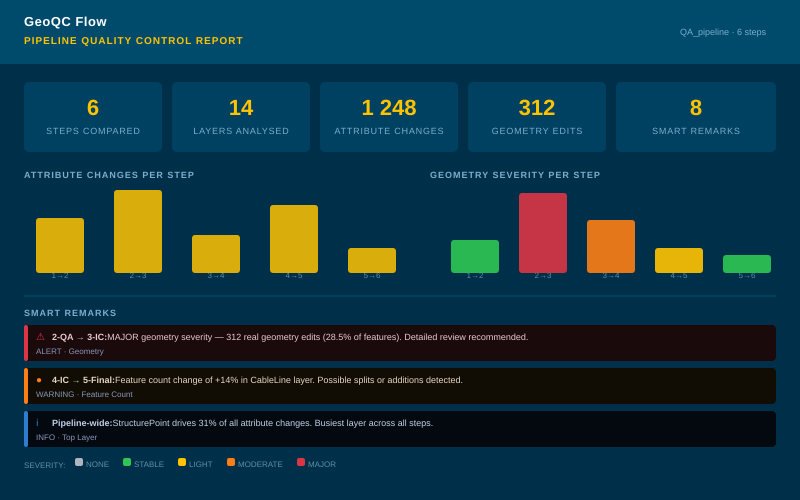
GeoQC Flow
Automated GIS pipeline quality control & reporting tool
Hey there, welcome to my GIS portfolio! Here, you'll find a mix of academic, professional, and fun GIS projects that I've worked on. From mapping social hotspots to analyzing vegetation patterns, I've had a blast exploring the world of GIS in all sorts of different fields. If you're curious about my background and experience, I've included links to my academic qualifications, preparation, and professional experience below. Feel free to check them out and get to know me a little better. Thanks for stopping by!

Automated GIS pipeline quality control & reporting tool
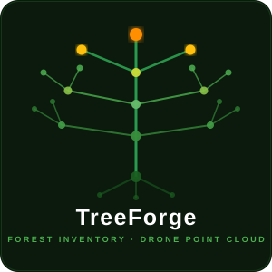
Drone point cloud to forest inventory — one command
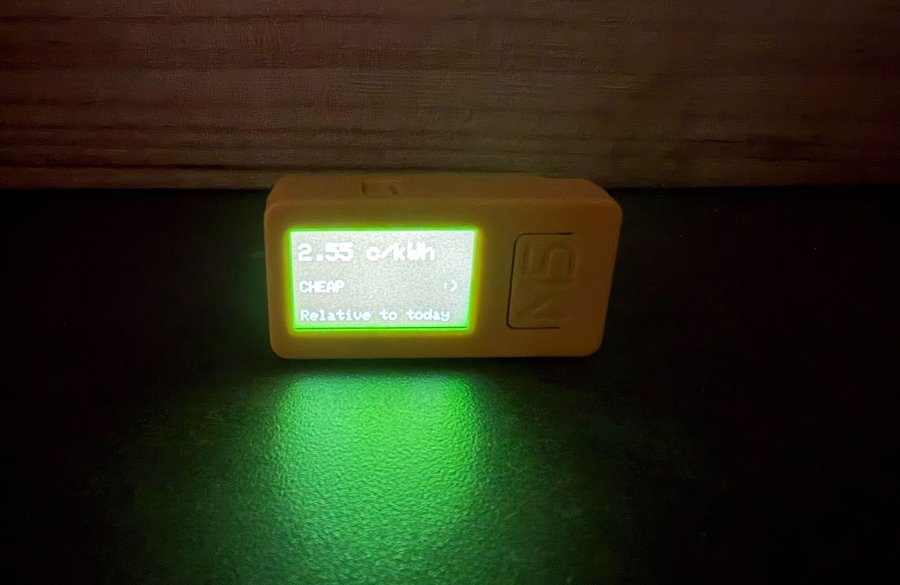
M5StickC IoT device — live electricity price at a glance
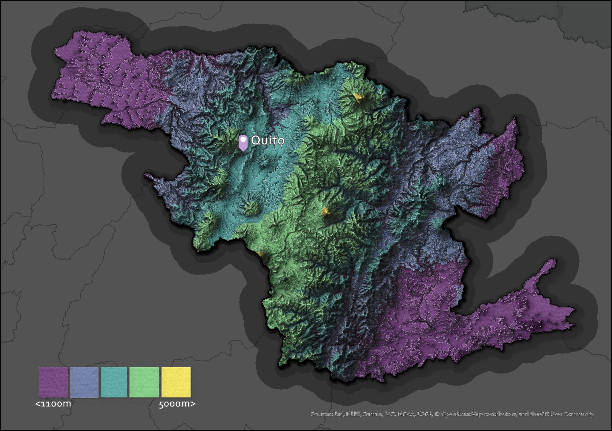
Personal cartography project
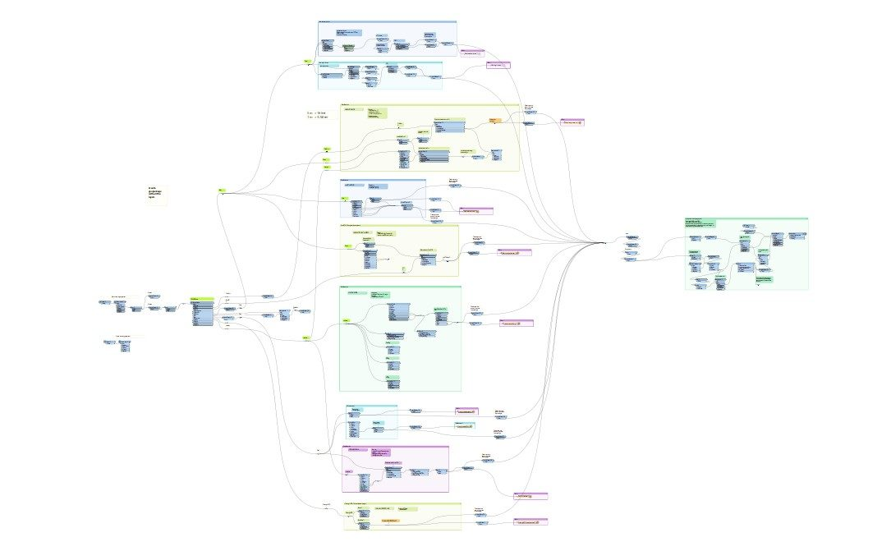
Maximizing GIS Workflow Efficiency
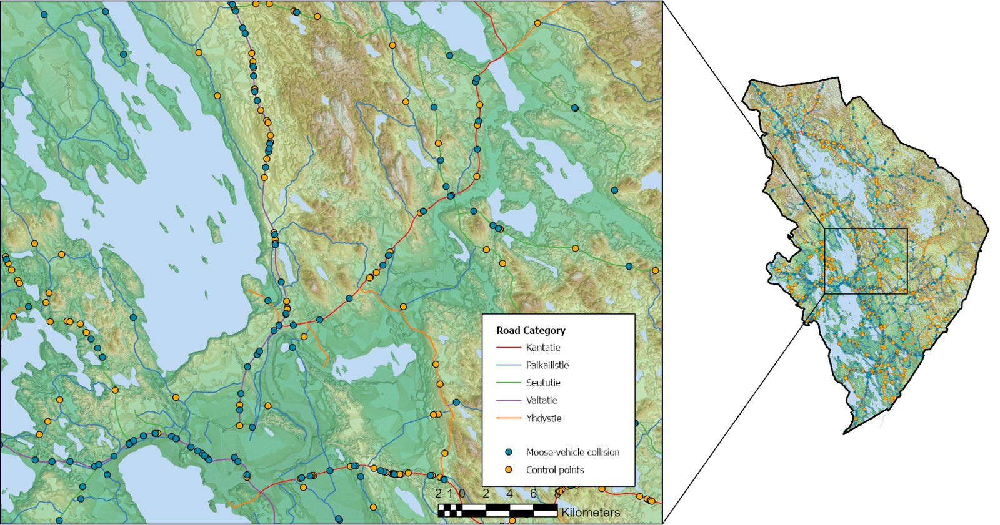
Exploring Moose-Vehicle Collisions in Finland through Spatial Analysis
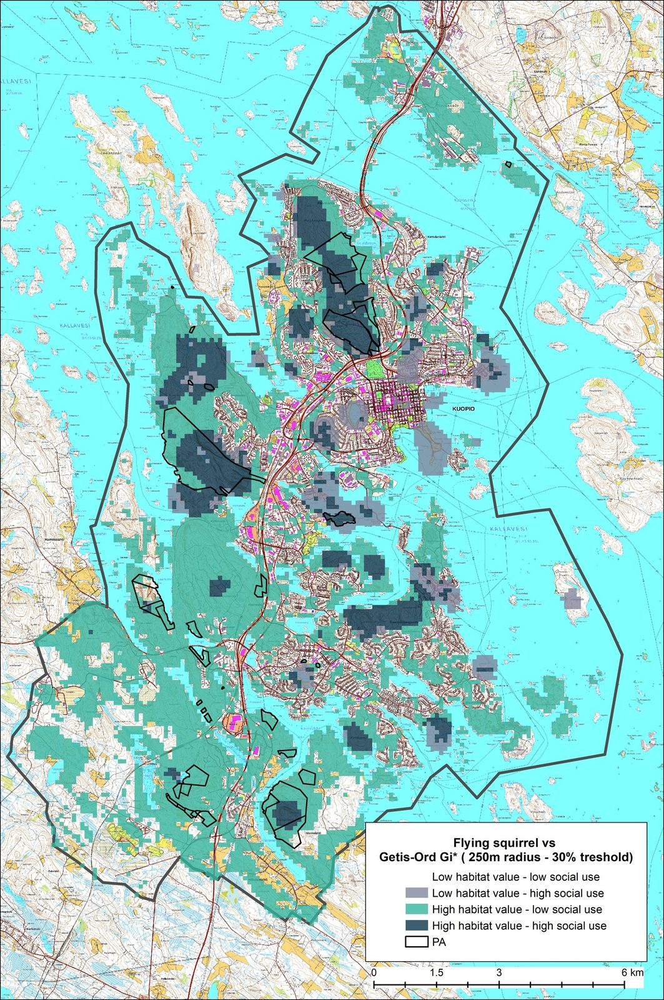
Conflicts between nature and social gathering spots

Ensuring the accuracy, integrity, and security of the data stored in the geodatabase

Determining the areas that can be seen from a particular location.
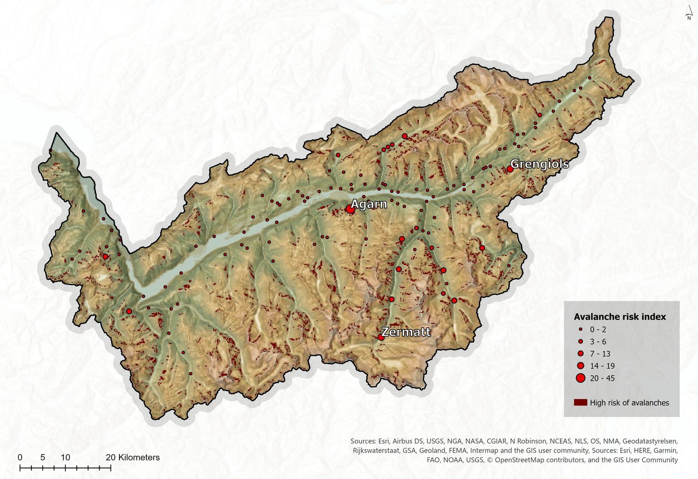
Evaluating potential risk
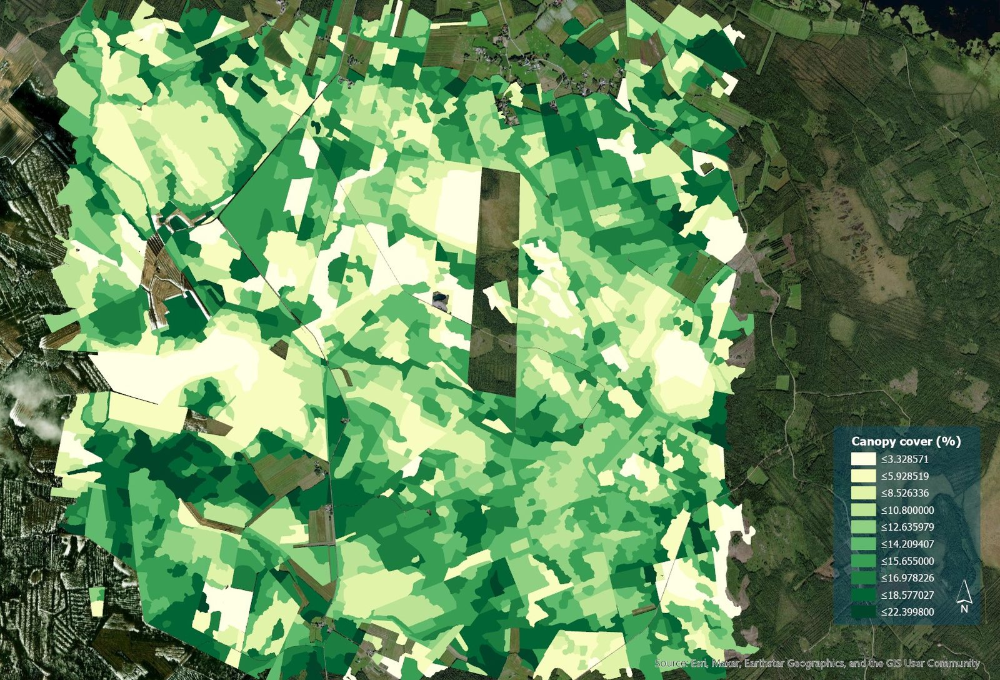
ArcGis Pro and model builder
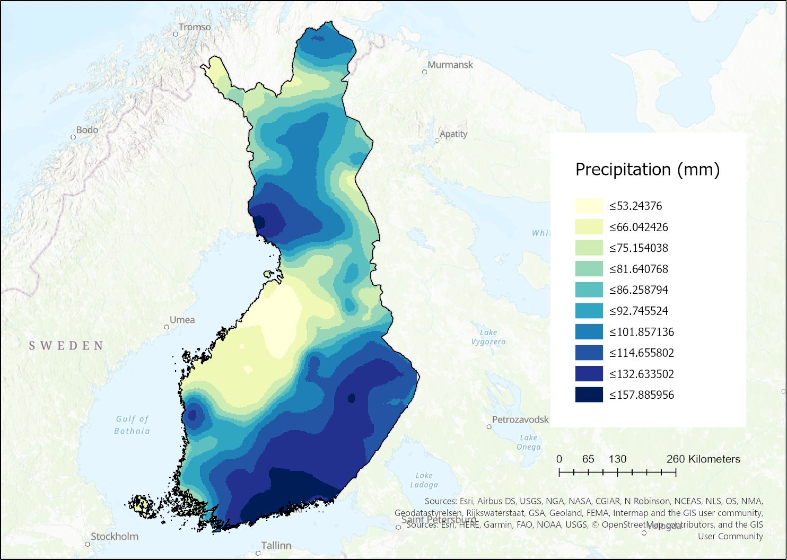
The use of interpolation methods
Improving Open Forest Data for Forest Management
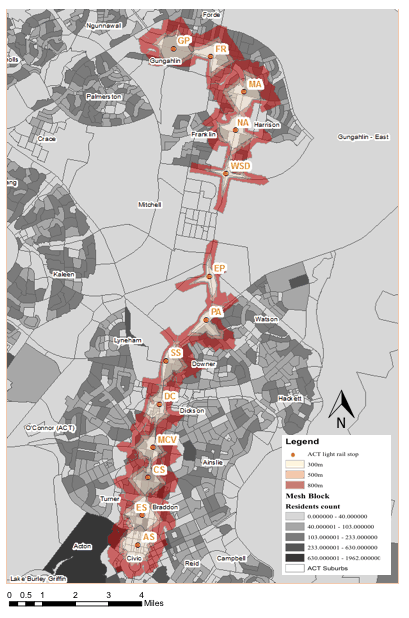
Evaluating the accessibility of the proposed stops along the Stage 1 ACT light rail system
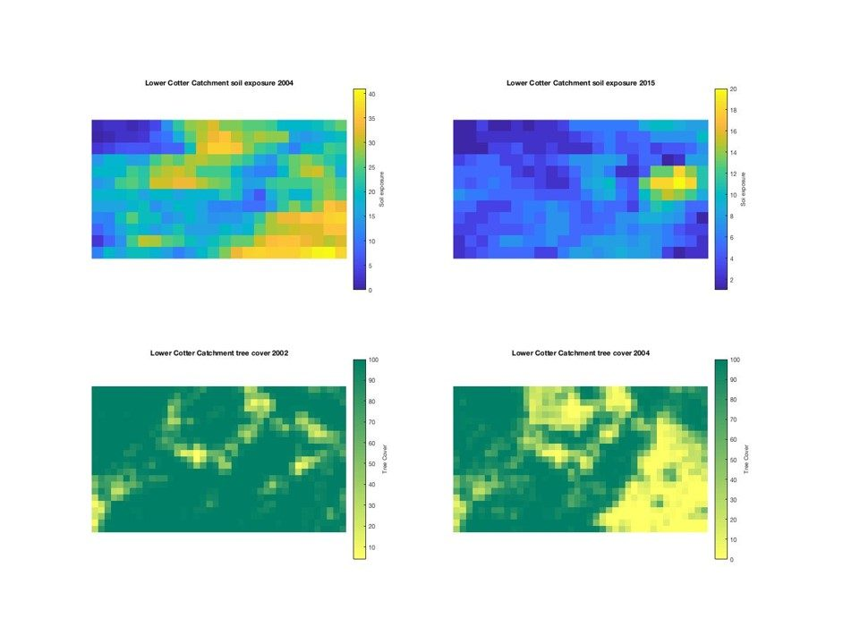
Analyzing Landscape Conditions and Fire Impacts in Australia using Remote Sensing and MATLAB